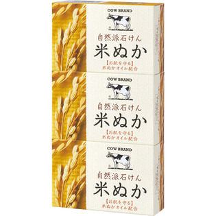
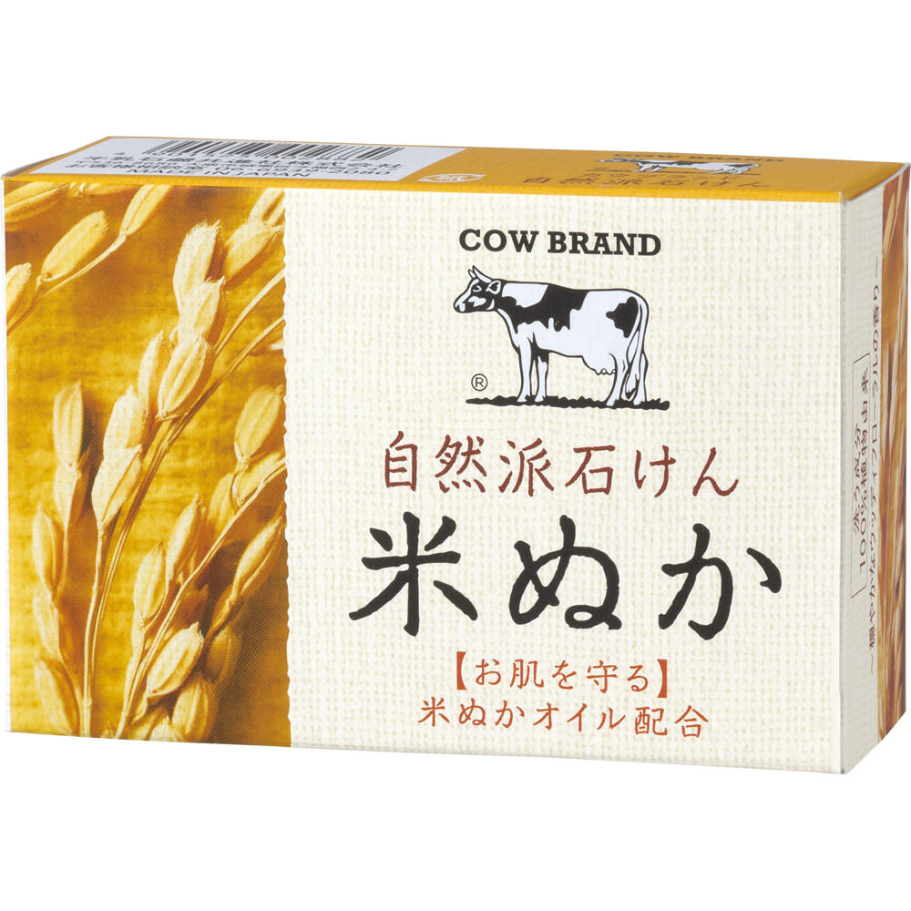

返回列表
产品名称：カウブランド 自然派石けん 米ぬか

牛乳石鹸共進社 カウブランド 自然派石けん 米ぬか １００ｇ×３
メーカー 牛乳石鹸共進社
JANコード 4901525002899
商品の特徴
○お肌を保護する米ぬかオイル配合の植物性石けん
○甘草由来成分※配合：かゆみを感じるお肌の乾燥もケアします
※保湿成分
○洗い上がりのお肌はすべすべつるつる
○穏やかなウッディフローラルの香り
成分・分量
＜成分＞
石ケン素地、パーム脂肪酸、グリコシルトレハロース、水、コメヌカ油、グリチルリチン酸2K、加水分解水添デンプン、カラギーナン、チャエキス、クチナシエキス、グリセリン、香料、エタノール、エチドロン酸4Na、EDTA-4Na
用法及び用量